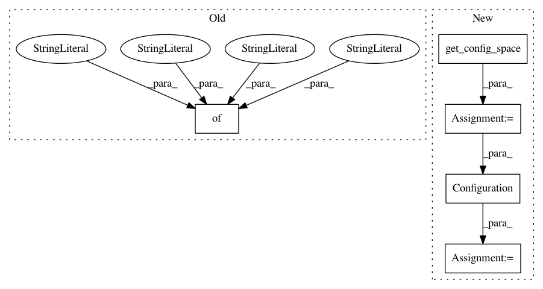

cb72976451303faac9a05c530aa9f8d022a8b429,test/runhistory/test_runhistory.py,RunhistoryTest,test_get_config_runs,#RunhistoryTest#,32
Before Change
status="SUCCESS", instance_id=1,
seed=1)
rh.add(config={"a": "1", "b": "3"}, cost=10, time=20,
status="SUCCESS", instance_id=1,
seed=1)
After Change
"""
rh = RunHistory()
cs = get_config_space()
config1 = Configuration(cs,
values={"a": 1, "b": 2})
config2 = Configuration(cs,
values={"a": 1, "b": 3})
rh.add(config=config1, cost=10, time=20,
status=StatusType.SUCCESS, instance_id=1,
In pattern: SUPERPATTERN
Frequency: 3
Non-data size: 5
Instances
Project Name: automl/SMAC3
Commit Name: cb72976451303faac9a05c530aa9f8d022a8b429
Time: 2016-02-22
Author: springj@informatik.uni-freiburg.de
File Name: test/runhistory/test_runhistory.py
Class Name: RunhistoryTest
Method Name: test_get_config_runs
Project Name: automl/SMAC3
Commit Name: cb72976451303faac9a05c530aa9f8d022a8b429
Time: 2016-02-22
Author: springj@informatik.uni-freiburg.de
File Name: test/runhistory/test_runhistory.py
Class Name: RunhistoryTest
Method Name: test_add
Project Name: automl/SMAC3
Commit Name: cb72976451303faac9a05c530aa9f8d022a8b429
Time: 2016-02-22
Author: springj@informatik.uni-freiburg.de
File Name: test/runhistory/test_runhistory2epm.py
Class Name: RunhistoryTest
Method Name: test_add